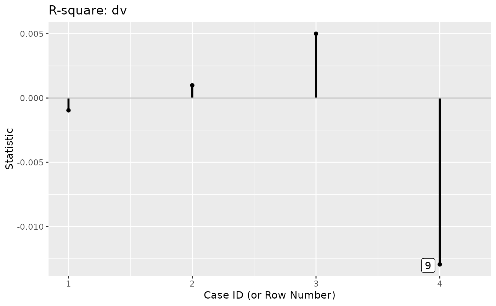

Gets a lavaan_rerun() output and computes the
changes in user-defined statistics for each case if included.
Arguments
- rerun_out
The output from
lavaan_rerun().- user_function
A function that accepts a
lavaan-class object. This function is for computing user-defined statistics.- ...
Optional arguments to be passed to
user_function.
Value
An est_change-class object, which is
matrix with the number of columns equals to the number of
values returned by user_function when computed in one
lavaan-class object, and the number of rows equals to
the number of cases. The row names are the case
identification values used in
lavaan_rerun(). The elements are the raw differences.
A print method is available for user-friendly output.
Details
For each case, user_change_raw() computes the differences
in user-defined statistics with and without this
case:
(User statistics with all case) - (User statistics without this case).
The change is the raw change. The change is not divided by standard error. This is a measure of the influence of a case on the use-defined statistics if it is included.
If the value of a case is positive, including the case increases a statistic.
If the value of a case is negative, including the case decreases a statistic.
The user-defined statistics are computed by a user-supplied
function, user_function. It must return a named
vector-like object (which can have only one value).
The output needs to be named, even if it has only one
value.
References
Pek, J., & MacCallum, R. (2011). Sensitivity analysis in structural equation models: Cases and their influence. Multivariate Behavioral Research, 46(2), 202-228. doi:10.1080/00273171.2011.561068
Author
Shu Fai Cheung https://orcid.org/0000-0002-9871-9448.
Examples
# A path model
library(lavaan)
dat <- pa_dat
mod <-
"
m1 ~ a1 * iv1 + a2 * iv2
dv ~ b * m1
a1b := a1 * b
a2b := a2 * b
"
# Fit the model
fit <- sem(mod, dat)
summary(fit)
#> lavaan 0.6.17 ended normally after 1 iteration
#>
#> Estimator ML
#> Optimization method NLMINB
#> Number of model parameters 5
#>
#> Number of observations 100
#>
#> Model Test User Model:
#>
#> Test statistic 6.711
#> Degrees of freedom 2
#> P-value (Chi-square) 0.035
#>
#> Parameter Estimates:
#>
#> Standard errors Standard
#> Information Expected
#> Information saturated (h1) model Structured
#>
#> Regressions:
#> Estimate Std.Err z-value P(>|z|)
#> m1 ~
#> iv1 (a1) 0.215 0.106 2.036 0.042
#> iv2 (a2) 0.522 0.099 5.253 0.000
#> dv ~
#> m1 (b) 0.517 0.106 4.895 0.000
#>
#> Variances:
#> Estimate Std.Err z-value P(>|z|)
#> .m1 0.903 0.128 7.071 0.000
#> .dv 1.321 0.187 7.071 0.000
#>
#> Defined Parameters:
#> Estimate Std.Err z-value P(>|z|)
#> a1b 0.111 0.059 1.880 0.060
#> a2b 0.270 0.075 3.581 0.000
#>
# Fit the model several times. Each time with one case removed.
# For illustration, do this only for four selected cases
fit_rerun <- lavaan_rerun(fit, parallel = FALSE,
to_rerun = c(2, 4, 7, 9))
#> The expected CPU time is 0.18 second(s).
#> Could be faster if run in parallel.
# Get the R-squares
lavInspect(fit, what = "rsquare")
#> m1 dv
#> 0.237 0.193
out <- user_change_raw(fit_rerun,
user_function = lavInspect,
what = "rsquare")
out
#>
#> -- Case Influence on User Function --
#>
#> id m1 id dv
#> 1 9 -0.003 9 -0.013
#> 2 4 -0.001 7 0.005
#> 3 2 0.000 4 0.001
#> 4 7 0.000 2 -0.001
#>
#> Note:
#> - Changes are raw changes if a case is included.
#> - All stored cases are displayed.
#> - Cases sorted by the absolute changes for each variable.
# Index plot
p <- index_plot(out,
column = "dv",
plot_title = "R-square: dv")
p
